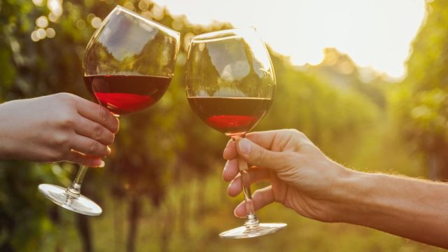

Красное вино . "Священные дары Диониса " . История возникновения вина .

Напитки играют немалую роль в истории и культурных традициях любого народа. С самых ранних шагов своего развития ни один народ, ни одно человеческое сообщество не могут обойтись без того или иного напитка, каждый из которых имеет свою неповторимую и красивую историю появления и особенностей употребления. Как только первобытный человек осознал решающее значение воды и жидкостей разного рода для обеспечения нормальной жизнедеятельности, у него одновременно возникло чувство глубокого уважения к воде и водным источникам.
Позднее, в античные времена и в древних цивилизациях Востока, Египта, Вавилона, Древнего Китая и Древней Индии, этот первобытный культ постепенно перерос в нечто большее — во всеобщее и общенародное поклонение обожествленной воде. Вскоре у многих народов появились различные культовые напитки, так как богобоязненные люди старались всячески умилостивить богов, принося им в жертву не просто воду, набранную поблизости из источника, а что-то более вкусное и ароматное.
В основном изобретением новых напитков занимались жрецы и служители храмового культа, которые являлись прямыми посредниками между народом и богами. Благодаря жрецам люди и открыли возможность переработки многих жидкостей в жидкости с совершенно другими свойствами, вкусовыми качествами и так называемыми «побочными» эффектами. Постепенно эти напитки вовсе вышли из стен храма и стали использоваться по любым значительным и торжественным поводам, а не только в честь местных божеств.
Все древние культовые напитки так или иначе были связаны с природными условиями обитания конкретного народа и с особенностями его «профилирующей» хозяйственной деятельности, будь то собирательство, бортничество, охота, рыболовство, а также оседлый или кочующий образ жизни. Так, на Востоке и в Средиземноморье с глубокой древности выращивался виноград, поэтому культовым напитком народов, населяющих данную территорию, было вино. У восточных славян же сырьем для изготовления культовых напитков считались соки различных ягод, березовый сок, а также мед диких пчел. Именно из данного сырья и изготовлялись русские традиционные народные хмельные напитки.
С принятием христианства на Руси культовые языческие напитки были вытеснены византийским красным вином, которое считалось «кровью Иисуса Христа». Но прежние ритуальные напитки вовсе не пропали из народного употребления, а просто перешли из разряда «церковных» и праздничных в общеупотребительные и довольно будничные, однако доступны они были не всем слоям общества, а лишь привилегированным.
История виноделия насчитывает почти столько же лет, сколько и самое древнее занятие человечества — земледелие, и более точный возраст вина доказывается благодаря раскопкам в местах древнейших поселений. Первый письменный источник, в котором упоминается этот божественный напиток, — это книга «Бытия», согласно которой после всемирного потопа Ной, едва высадившись на сушу, первым делом посадил виноградник. Достоверно известно, что еще в древней Месопотамии виноградное вино делалось за целое тысячелетие до этого упоминания в книге «Бытия». Историками выдвигается предположение, что вино впервые появилось именно в районе расположения современных стран Ближнего Востока, а уже затем распространилось дальше благодаря мореплавателям, перевозившим разнообразные грузы в другие страны.
Путешественники и торговцы из Малой Азии как-то добрались до южных побережий Франции и Испании, куда и завезли виноградное вино, которое стало пользоваться огромной популярностью среди местных жителей. Это победное шествие виноградного вина по Европе происходило задолго до нашей эры.
Вскоре этот напиток, развозимый вездесущими мореплавателями, распространился практически по всему миру. И нет ничего удивительного в том, что в каждой религии и верованиях древних предков обязательно присутствует персонаж, напрямую связанный с этим напитком, который признается одним из самых древних. В древнегреческой мифологии этого «винного» бога и красавца называли Дионисом, в Древнем Риме это проказник и распутник Бахус, а в Древнем Египте — маленький божок виноградной лозы Шаи.
Примечательным является тот факт, что во всех традиционных верованиях каждого народа существовал определенный праздник, связанный именно с богом виноградного вина, который всячески почитался и ублажался, ему дарили дорогие подарки и приносили священные жертвы. Во время этого праздника весь народ вкушал вино в огромных количествах, веселился, пел и плясал, и поэтому эти боги часто приравнивались к богам веселья и радости, беззаботного времяпрепровождения.
Если немного углубиться в греческую мифологию, можно узнать, кем же на самом деле был Дионис. Этот греческий бог является одним из самых младших на божественном Олимпе, да и богом он был признан не сразу. Так звали человека, который отправился странствовать по разным государствам и учить людей выращивать виноград и делать из него прекрасный и очень приятный на вкус напиток. И каждый раз Дионис говорил, что он является посланником богов, ниспосланным на землю для того, чтобы научить людей сажать виноград и делать из него этот божественный напиток, секрет которого принадлежал только богам. Дионис был красивым и статным юношей, одетым в дорогие одежды, и он умел творить чудеса.
Как-то раз его похитили пираты, которые позарились на богатые одежды. Они решили, что Дионис — сын знатного греческого торговца. Решили они продать его на невольничьем рынке и выручить за него большие деньги. Но каждый раз, когда они пытались сообща его связать, путы сами спадали с его тела и он вновь оказывался на свободе. Пираты недоумевали и решили, что над ними кто-то зло подшучивает, а когда принялись искать на своем корабле сообщника Диониса, увидели, что по палубе разливается благоухающая темная жидкость, которая на деле оказалась виноградным вином.
В тот же миг корабль преобразился до неузнаваемости: мачты и снасти увили виноградные лозы с сочными и крупными листьями, между которых стали появляться яркие и прекрасные цветы, постепенно превратившиеся в сверкающие под лучами солнца виноградные гроздья. Белые паруса наполнились теплым ветром, и корабль стал похож на огромный плавучий виноградник, весь усыпанный прекрасными и ароматными ягодами, будто вобравшими в себя все солнечное тепло.
Пираты на миг обомлели и принялись прыгать за борт, спасаясь от неведомого колдовства, а Дионис превратил всех их в дельфинов, потомки которых до сих пор сопровождают корабли в надежде найти тот, на котором плавали их предки, и вновь принять человеческое обличье. Они даже пытаются что-то сказать морякам на своем дельфиньем языке, но никто их не понимает — так повелел бог вина Дионис.
Бахус, или Вакх, или Либер, является римским богом виноградного вина и покровителем всех виноградников. Он имел совсем другой нрав, нежели Дионис, да и прославился благодаря другим качествам. Бахус был неисправимым весельчаком и очень любил в шумной компании бродить по лесам и лугам, пить виноградное вино и устраивать веселые праздники, игры и театральные представления.
В Древнем Египте дело обстояло по-другому: сами жрецы, служители божественного культа, не могли определить, кого же именно благодарить за появление винограда — богов плодородных земель, на которых он и произрастает, или богов воды, которая питает виноградную лозу. В конце концов появился своего рода симбиоз (совместная форма существования) богов плодородия и воды, которого и назвали именем Шаи.
По сравнению с Дионисом и Бахусом Шаи был сущим ангелом со спокойным нравом и доброй душой, и поэтому в его честь не устраивали буйных пирушек и оргий. В Древнем Египте виноделами могли быть лишь состоятельные люди, и в результате Шаи стал считаться не только маленьким богом виноградной лозы, но и богом, символизирующим достаток и богатство, изобилие и полное довольство.
Как же наши далекие предки научились делать вино и выдерживать его определенное время, чтобы обыкновенный сок в результате брожения приобрел совершенно новые свойства и стал совершенно другим напитком с новыми вкусовыми качествами?
Известно, что в древности вино перед употреблением выдерживали очень долго — от 15 до 20 лет. Причем оно хранилось в специальных сосудах — амфорах, которые запечатывались и закапывались глубоко в землю. Римляне придумали более совершенный способ закупорки сосудов с вином — амфора затыкалась пробкой, а сверху заливалась воском, что полностью предохраняло вино от соприкосновения с воздухом. В качестве пробки использовалась деревянная затычка, которая обливалась оливковым маслом, чтобы не допустить проникновения воздуха в сосуд. Немного позднее галлы додумались хранить и перевозить виноградное вино в деревянных бочках, что было очень удобно.
Известно, что радикальные политические изменения и катаклизмы в жизни конкретной страны или империи очень сильно сказываются на всех сторонах ее жизни, в том числе и на качестве вина. Именно это и произошло после распада великой и огромной Римской империи, так как варвары не собирались тратить драгоценное время на выращивание виноградников и ожидание, пока виноградный сок превратится в настоящее виноградное вино.
В результате такого халатного отношения понятие о выдержке вина вообще исчезло из жизни людей на весьма продолжительный период времени. Варваров вполне устраивала вонючая и хмельная виноградная брага, для приготовления которой не требовалось ни много времени, ни особых усилий, так как можно было просто свалить собранный виноград в чан, выжать сок и дать ему немного постоять в незакрытой деревянной бочке. Вместо настоящего вина, которое издревле считалось напитком богов, люди потребляли «кислятину», которая мало чего общего имела с вином и практически не выдерживалась, так как эта жидкость выпивалась намного раньше следующего урожая.
Намного позже, через несколько веков, некоторые замечательные личности вновь решили возродить старинную традицию выдерживать вина в течение долгого времени, и благодаря им эта традиция процветает до сих пор. После целой серии экспериментов с различными добавками к вину было выяснено, что при смешивании вина в определенных пропорциях с некоторыми веществами оно приобретало непревзойденный вкус и аромат. Среди подобных новаторов был известный теперь на весь мир монах Периньон, изготавливавший по собственному рецепту особо вкусное и приятное вино, которое производится по тому же рецепту по сей день и носит имя своего незабвенного автора. Заслуги этого монаха, навеки вошедшего в историю виноделия, изобретением нового сорта красного вина не исчерпываются: оказывается, он вновь решился использовать при хранении вина пробки, чем возродил ушедшую было в глубину веков традицию.
С появлением стеклянных бутылок в виноделии произошел фурор, так как то красное вино, которое хранилось в них, имело качество более высокое, нежели вино, хранившееся в обыкновенных бочках. А по мере того, как европейцы расселялись по миру, постепенно распространялись и их напитки, и вскоре о красном вине знали на обоих континентах Америки, а также в Австралии и Новой Зеландии. В середине XVI века потомки испанских конкистадоров, которые когда-то подчинили местные племена индейцев, стали выращивать на плодородной почве виноград, из которого в скором времени стали делать местное красное вино, которое впоследствии распространилось не только на территории современной Мексики, но и в Аргентине, Чили и Перу. Немного позже, в конце XVIII века, виноградниками были засажены внушительные территории в Калифорнии и некоторых районах Австралии.
В Европе же признанными лидерами в производстве красных вин, и в особенности крепленых, считались британцы, которые особенно «набили руку» в производстве портвейна. Этот напиток появился в Британии в середине XVII века и стал в народе одним из самых популярных. Толчком к бурному развитию виноделия в Англии стала опять же политика, и притом внешняя — из-за постоянных войн с соседней Францией налог на великолепные по качеству французские вина стал непомерным и просто не по карману даже английским лордам, тем более, что французское правительство решило пойти на крайние меры и перестать экспортировать свои вина через пролив Ла-Манш, или Па-де-Кале (на французский манер).
Поэтому бедным англичанам пришлось пить красное вино собственного приготовления, но не очень высокого качества. Поначалу собственный портвейн показался привередливым англичанам не очень приятным на вкус, но так как переговоры с противником ни к чему не привели, война продолжалась, и населению туманного Альбиона ничего другого не оставалось, как довольствоваться тем, что они производили сами. Англичане решили переправлять вино из далекой и солнечной Португалии, чьи вина по своему качеству и вкусовым свойствам гораздо уступали французским, но зато были лучше английских.
Кстати, Португалию, которая занимается виноделием примерно с I века до н. э., называют страной вина. Здесь только на сланцевой почве и в условиях уникального климата долины Дуэро руками потомственных виноделов с их интуицией и накопленным веками опытом создается настоящее произведение искусства — вино Porto.
Porto и другие сорта португальских вин перевозили по морю в Великобританию. Чтобы во время долгого морского путешествия португальские вина не портились и не начинали вновь бродить, в них стали добавлять небольшое количество крепкого бренди. В результате получился качественно новый напиток, чей вкус был весьма приятен и понравился англичанам. Вскоре это вино, прозванное портвейном по названию португальского города Порт, из которого оправлялись корабли с вином в Англию, распространилось по всему миру и завоевало добрую славу и любовь.
Таким образом, портвейн своим происхождением обязан постоянным военным и торговым конфликтам, которые происходили между вечными врагами — Англией и Францией. Привыкшие к изысканным и тонким французским винам, британские аристократы поначалу «воротили нос» от отечественного продукта, а затем и от привозного португальского вина, но другого выхода не было, и им тоже пришлось перейти сначала на местный алкогольный продукт, а затем и на всемирно известный портвейн. Вскоре все англичане настолько привыкли к специфическому вкусу портвейна, что кроме него не могли уже ничего пить и стали считать данный алкогольный напиток символом своего отечества наряду со знаменитой английской овсянкой.
Подобные коренные изменения происходили и во Франции того времени, которая уже стала считаться мировым лидером в производстве качественных вин с тонким вкусом. Все французские короли без исключения были известными гурманами и знатоками вин, а потому одной из важных государственных задач было и ежегодное производство соответствующего количества вина определенных сортов, а также обеспечение постоянных поставок ко двору его величества. Известно, что особую заботу о состоянии виноделия, которое имело определяющее влияние на финансовое состояние винодельческой державы, проявлял Наполеон III, который консультировался со многими известными виноделами и химиками по вопросу ежегодной порчи огромного количества вина. Такое задание было дано и Луи Пастеру, которому после многих опытов и экспериментов удалось доказать, что для нормального созревания вина самого высшего качества все-таки необходим воздух, хотя раньше считали, что чем лучше закупорена бутылка с молодым вином, тем лучше оно получится.
Так вот, Луи Пастер доказал, что небольшое количество воздуха просто необходимо для нормального созревания вина, и в бутылке с вином его должно находиться определенное количество. Также Пастер определил, что на качество, аромат и вкус вина влияет бочка, в которой она хранится, а также последующий процесс сцеживания, во время которого вино «дышит» и абсорбирует кислород.
К нашей великой радости, к концу XIX века почти все старинные и даже древние традиции виноделия, многие тонкости производства и выдержки данного алкогольного напитка были возрождены из небытия и вновь стали активно использоваться и развиваться многими виноделами того времени.
Вероятно, люди поняли, что же для них на самом деле значит вино и каким важным инструментом управления и воздействия на политическую и общественную жизнь отдельно взятой страны является винное производство. Виноделы, производящие английский портвейн, быстро разбогатели и стали очень влиятельными и знатными людьми, чье мнение всегда учитывалось при решении какого-то конкретного вопроса. Постепенно люди настолько привыкли к вину, что просто не могли представить свою жизнь без каждодневного стаканчика портвейна или качественного красного или розового вина, которое, как было замечено еще несколько веков назад, придает сил и очищает кровь.
Постепенная эволюция, которая происходила в сфере виноделия, появление качественно новых приемов и новшеств при процессе брожения и во время выдержки будущего вина привели к тому, что со временем качество вин становилось все лучше и лучше, а их разнообразие просто поражало.
Но в конце XIX века произошло трагическое событие, которое напрямую повлияло на состояние виноделия в европейских странах: из Америки была завезена особая виноградная тля, которая поражала виноградные лозы, вследствие чего виноград просто не вызревал. В результате назрел винный кризис и производство вина стало под вопросом. Земледельцы, выращивающие виноград, и знаменитые виноделы сплотились, чтобы оказать должный отпор заморскому зловредному насекомому, которое за короткий период погубило труды долгих лет.
Так, благодаря совместным усилиям, решился этот сложный вопрос, который мог поставить под сомнение факт выживания виноградников и дальнейшего существования на этом свете вина. Как всегда, решение было по-гениальному просто: американский сорт винограда, у которого был стойкий иммунитет к завезенной заразе, был скрещен с одним из европейских сортов. В результате этого смелого эксперимента появился новый сорт винограда, устойчивый к американской напасти и имеющий прекрасные вкусовые характеристики, и именно из этого скрещенного сорта впоследствии производились самые лучшие европейские вина.
На вкус и качество получаемого красного вина влияет не только сорт винограда, но и условия произрастания виноградной лозы, а также почва и уход. Лучше всего иллюстрирует многолетний и мучительный процесс выращивания годного для производства вина винограда следующая старинная пословица: «Чтобы стать прекрасной, лоза должна страдать».
Существует даже целая наука о вине, которая называется «энология». Само это слово происходит от двух греческих корней — oinos и logos, — означающих соответственно «вино» и «учение». Энология изучает непосредственно виноделие, которое определяется как контролируемый со стороны винодела процесс превращения виноградного сока в вино и его брожение. А также энология уделяет внимание последующему уходу за готовым вином, его правильному хранению и грамотному употреблению.
Насчет употребления вина существует множество правил, но самое главное из них — это не переусердствовать, о чем нам поведали мудрые и далекие предки. Так, сам Пифагор сказал следующее об употреблении священного напитка, именуемого вином: «Как старинное вино непригодно к тому, чтобы его много пить, так и грубое обращение непригодно для собеседования». А вот что говорил по этому поводу другой древнегреческий философ, Анахарсис: «Виноградная лоза приносит три грозди: гроздь наслаждения, гроздь опьянения и гроздь омерзения», так что постарайтесь не сбиваться со счета, когда пьете вино. В нашей стране также было немало мудрецов, имевших собственное мнение относительно этого предмета: «Без вина — одно горе, с вином — старое одно да новых два: и пьян, и голова болит».
С историей и характером того или иного сорта вина тесно связана форма бутылки, в которой оно по старинной традиции должно храниться. Известная и привычная нам форма винных стеклянных бутылок давно стала классической и считается традиционной во многих странах. Существует множество способов необычного и оригинального оформления стеклянных бутылок, что является своеобразным отличительным и фирменным знаком того или иного вина и целого региона, где его производят. Но, оказывается, форма бутылки выполняет не только эстетическую роль, но и содержит важные практические свойства. Например, классические цилиндрические бутылки для вина имеют такую форму для того, чтобы можно было хранить вино в специальных погребах в горизонтальном положении, чтобы пробка впитывала влагу и таким образом препятствовала проникновению лишнего воздуха в бутылки.
Классические благородные французские бургундские вина с давних времен хранятся в бутылках особой формы с покатыми боками. Подобные бутылки гораздо тяжелее и шире обыкновенных, так как их делают толстостенными. Для красного вина, которое делается во французской провинции Бордо, используется своя форма бутылок — это узкая высокая бутылка из зеленого стекла. Портвейн хранится также в высоких бутылках, только они немного крупнее и имеют более выпуклое горлышко. Вина, производимые в Германии или в других странах, но из немецких сортов винограда, принято хранить в изящных бутылках коричневого стекла в форме флейты. Чем необычнее и оригинальнее форма бутылки, тем дороже и качественнее налитое в нее вино.
Существуют винные бутылки, которые изготавливаются в форме древнегреческих амфор или небольших фляжек. Также встречаются волнообразные, изогнутые формы бутылок или, наоборот, приземистые и широкие, с длинными, чуть кривоватыми горлышками. Самое лучшее и качественное красное вино должно быть обязательно налито в бутылку темного стекла — зеленого или коричневого, так как такое стекло предохраняет напиток от вредного воздействия света, что было подмечено много веков назад.
Завершить повествование об истории красного вина позвольте цитатой из Ветхого завета: «Вино полезно для жизни человека, если будешь пить его умеренно. Что за жизнь без вина? Оно сотворено на веселие людям. Вино, употребляемое вовремя и умеренно, — отрада сердцу и утешение для души». Так давайте следовать этому правилу и наслаждаться самым древним из алкогольных напитков, дарованным нам самими богами!